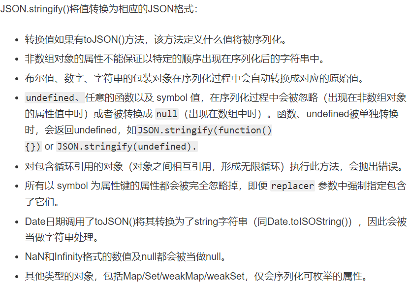

之前在写一个vue的计算属性时，大概是这样：
computed: {
updateList () {
let newList = this.List
/*do something*/
return newList
},
}本想的是设置个中间变量newList，将它和原来的List相比做一些操作，最后返回这个newList，后来发现原List也改变了。才意识到这个newList只是个引用类型，改变了它原来的对象也会变。
查资料的过程中，注意到了还有深拷贝浅拷贝的区别:
浅拷贝是拷贝一层，深层次的对象级别的就只拷贝引用；
深拷贝是拷贝多层，每一级别的数据都会拷贝出来。
一.Array的拷贝
1.浅拷贝
如上，直接赋值的方式
2.深拷贝
（1）slice()方法
对于array对象的slice函数，返回一个数组的一段。（仍为数组）
arrayObj.slice(start, [end])
参数：
arrayObj 必选项。一个 Array 对象。
start 必选项。arrayObj 中所指定的部分的开始元素是从零开始计算的下标。
end可选项。arrayObj 中所指定的部分的结束元素是从零开始计算的下标。
说明：
slice 方法返回一个 Array 对象，其中包含了 arrayObj 的指定部分。
slice 方法一直复制到 end 所指定的元素，但是不包括该元素。
如果 start 为负，将它作为 length + start处理，此处 length 为数组的长度。
如果 end 为负，就将它作为 length + end 处理，此处 length 为数组的长度。
如果省略 end ，那么 slice 方法将一直复制到 arrayObj 的结尾。
如果 end 出现在 start 之前，不复制任何元素到新数组中。对于本例,let newList = this.List.slice()即可
（2）concat()方法
concat() 方法用于连接两个或多个数组。该方法不会改变现有的数组，而仅仅会返回被连接数组的一个副本。
语法：arrayObject.concat(arrayX,arrayX,......,arrayX)
说明：返回一个新的数组。该数组是通过把所有 arrayX 参数添加到 arrayObject 中生成的。如果要进行 concat() 操作的参数是数组，那么添加的是数组中的元素，而不是数组。对于本例,let newList = this.List.concat()即可
但是，这两种方法都有局限性，如：
var arr1 = [{"name":"weifeng"},{"name":"boy"}];//原数组
var arr2 = [].concat(arr1);//拷贝数组
arr1[1].name="girl";
console.log(arr1);// [{"name":"weifeng"},{"name":"girl"}]
console.log(arr2);//[{"name":"weifeng"},{"name":"girl"}]var a1=[["1","2","3"],"2","3"],a2;
a2=a1.slice(0);
a1[0][0]=0; //改变a1第一个元素中的第一个元素
console.log(a2[0][0]); //影响到了a2
var b1=[["1","2","3"],"2","3"],b2;
b2=b1.slice(0);
b1[0][0]=0; //改变a1第一个元素中的第一个元素
console.log(b2[0][0]); //影响到了a2从上面两个例子可以看出，由于数组内部属性值为引用对象，因此使用slice和concat对对象数组的拷贝，整个拷贝还是浅拷贝，拷贝之后数组各个值的指针还是指向相同的存储地址。
因此，slice()和concat()这两个方法，仅适用于对不包含引用对象的一维数组的深拷贝
(3)使用JSON.stringify和JSON.parse实现深拷贝：
JSON.stringify把对象转成字符串，再用JSON.parse把字符串转成新的对象
对于本例, let newList = JSON.parse(JSON.stringify(this.List))
JSON.stringify()有一些局限，比如不能拷贝function，详见:https://developer.mozilla.org/zh-CN/docs/Web/JavaScript/Reference/Global_Objects/JSON/stringify

(4)当然,如果是不那么复杂的数组，你可以声明一个新数组，自己写一个for循环拷贝过去。